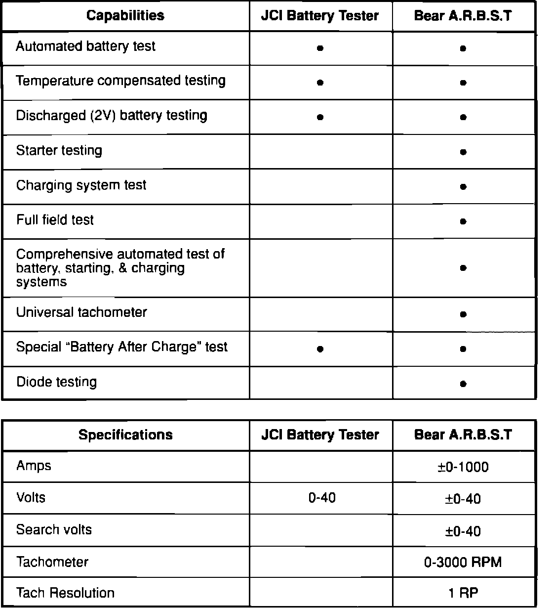

Battery - Testing Equipment
89acura07YEAR MODEL VIN APPLICATION
ALL ALL ALL
November 24, 1989
BULLETIN NO
89-037
Battery Testing Equipment
The battery testing equipment listed in this bulletin is required to test batteries in Honda cars (see Section 3.9 of your Automobile Dealer Sales and Service Agreement). Select the tester that will best suit your dealership. Equipment testing capabilities are listed on page two.
The testing equipment can be purchased through American Honda's Service Tool and Equipment Program or directly from the manufacturer.
NOTE: Equipment costs will vary from vendor to vendor.
COMPANY TOOL NAME MODEL
NUMBER
NOTE: Contact Special Tools for an order form. All orders Johnson Control Inc. 42-253 are subject to approval upon receipt at American Honda Battery Tester
Motor Co., Inc.
Bear A.R.B.S.T. 42-210
American Honda Motor Co., Inc. (alternator, regulator, battery,
Attn: Special Tools (Service Tool and Equipment Program) & starter tester)
100 W. Alondra Blvd.
Gardena, CA 90248-2702
Mail Stop 5-1-6A
(800) 346-6327
Johnson Controls Inc. Johnson Control Inc. 42-253
5757 N. Green bay Ave. X41 A Battery Tester
Milwaukee, Wi 53201-0591
(414) 228-2165
Bear Automotive Bear A.R.B.S.T 42-210
2855 James Dr. (alternator, regulator, battery,
New Berlin, Wi 53151 & starter tester)
(414) 786-5212
WARRANTY INFORMATION
Both testers are warranted by Bear Automotive Service Equipment Comapny. Equipment obtained through American Honda comes with an additional 3 year warranty on the CPU board.
EQUIPMENT RETURN INFORMATION
To return equipment purchased from American Honda, Johnson Controls, or Bear Automotive, it will be necessary to contact American Honda; Special Tools first.

TESTING CAPABILITIES AND SPECIFICATIONS